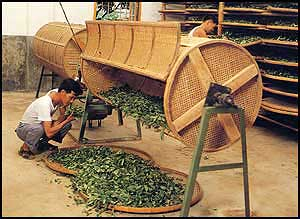

OOLONG TEA
The distinctive family of teas known as oolong is believed to have originated in the Wu Yi mountains along the western border of Fujian province.
Oolong embraces a wide variety of leaf styles and flavors and ranges in color from bright green to nearly black. The rich flavor and fragrant aroma of oolong result from a process often referred to as "fermentation" but which is really an oxidizing action. This effect is produced after withering (which allows the leaves to soften) by tumbling or otherwise bruising the surface of the leaves in order to break down their cells and release enzymes which darken when exposed to the air. Once the tea has achieved the desired color and flavor development, the leaves are usually rolled or twisted and oxidation is halted by drying.

TUMBLING & OXIDIZING, Fujian province, China
CLOSE WINDOW